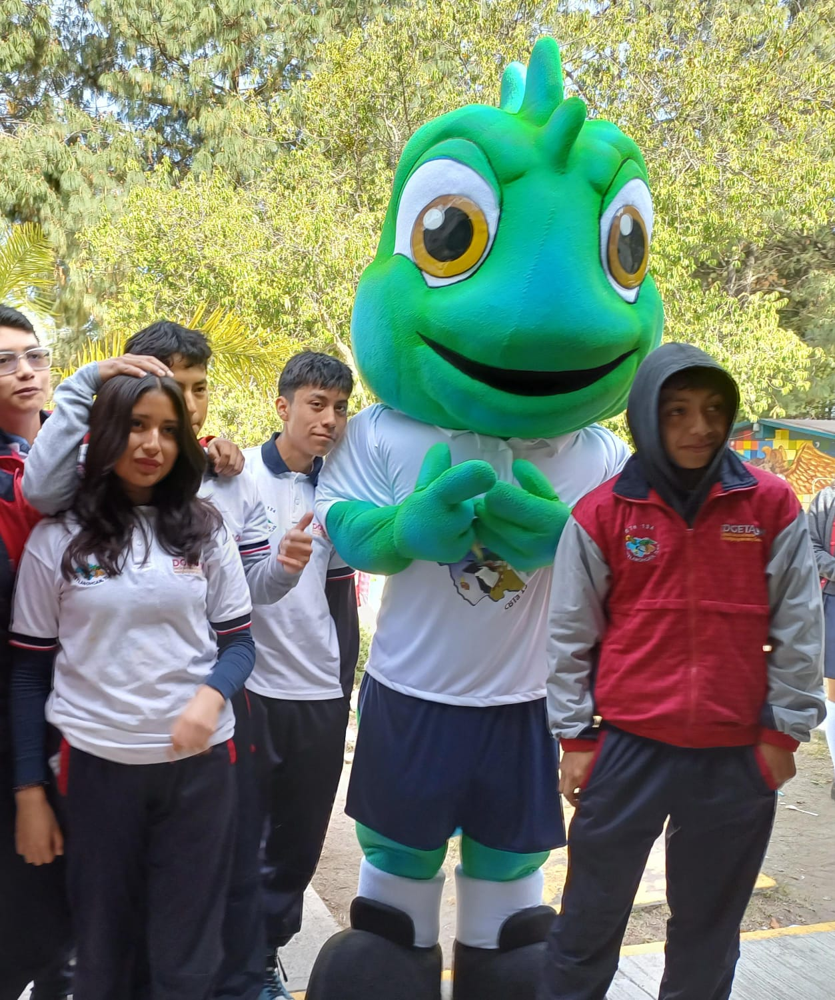

El Centro de Bachillerato Tecnólogico Agropecuario No.134 se fundo el 1 de Septiembre del año 1981, durante ese tiempo comenzaron las actividades dentro del plantel ubicado en el Municipio de San Francisco Tetlanohcan en la calle Josefa Ortiz de Dominguez, con Código postal 90840
Contribuir activamente en la formación integral de nuestros estudiantes del Bachillerato Tecnólogico con su enfoque de desarrollo sustentable y Emprendedor que lo integran plenamente a la sociedad
Ser una institución de calidad formada de lideres del mañana
"Formar e innovar para transformar"
